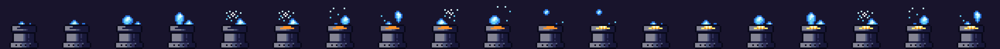

Vent warning, variant B: boil drawn into the vent body frames
The 10 hand-placed boil grids and the 3 warning body frames are unchanged. Each of the 19 (body frame, boil grid) pairs the 72 warning ticks show is now one 32x32 body frame, so the game draws one sprite less per vent. Checked by script: every new frame is pixel-identical to what the old two-sprite draw put on screen (boil 1 px into the body, behind it). No new colour: the frames use the vent palette line only.
Live preview: 72 tick warning at 60 Hz, with shake and glow (left 3x, right 8x)
New: the 19 warning frames, in the order they show (sheet colours, 6x)

New: the same frames in the glow step of the tick they first show on (6x)
Old: the separate boil sprite, 10 frames (6x) - deleted as a sprite
Vent body frames 0..4 (idle, 3 warning levels, launch), unchanged (6x)
In game now, stage 3, idle (left) and warning tick 4 (right): one sprite, boil in the body frame. MAME snapshot crops, 6x. Script check: all heat-free pixels of warning frame 1 match the snapshot.